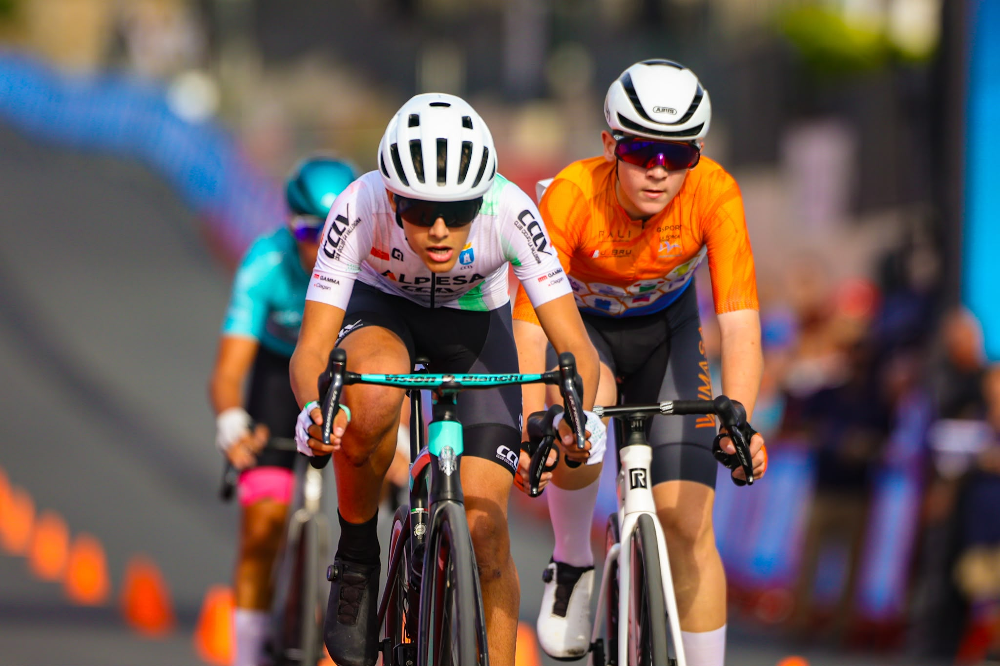
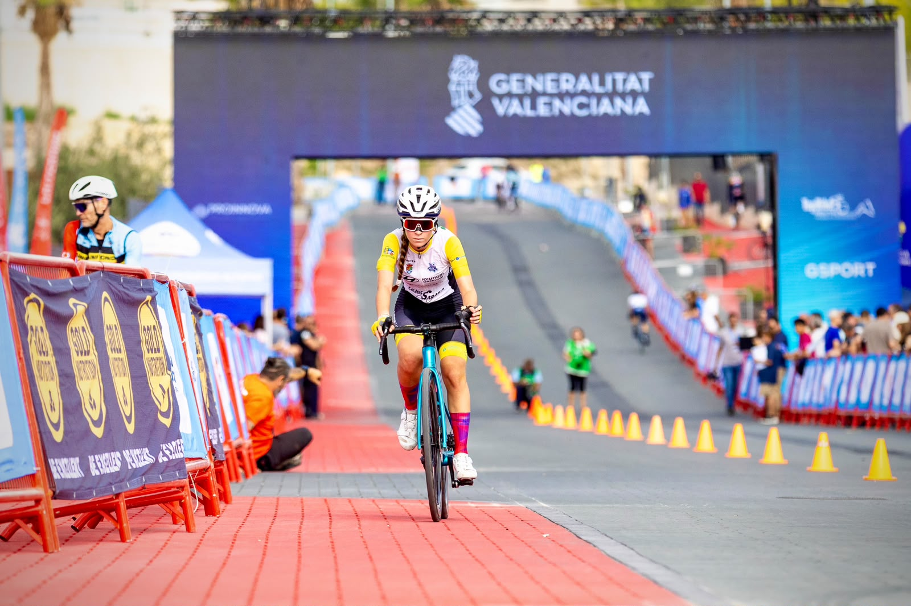

La Nucía's cycling weekend opened on Saturday, 17 October, with the inaugural National Kids Criterium and the third International Criterium. The young riders competed during the morning before established professionals, emerging talent and cycling figures took over the circuit in the afternoon.
The International Criterium combined four formats. Paula Blasi beat Pedro Delgado in the head-to-head race, Enric Mas won the points contest, speed skater Sara Cabrera beat Blasi in their duel while Mas won his, and Álex Díaz defeated Mas in the elimination final.
Saturday's races take centre stage
Image Media's coverage follows the pace and variety of the circuit: riders driving through the corners, young cyclists working together in the bunch and a competitor returning along the finish straight. The three selected photographs are presented in their original horizontal framing.


Sunday Gran Fondo moved for safety
The Gran Fondo scheduled for Sunday, 18 October, did not start. The organisation acted on the weather forecast and instructions from the authorities, putting the safety of riders, volunteers, marshals and event staff first.
The UCI Gran Fondo World Series later confirmed a new date: Saturday, 7 November 2026. The courses, climbs and distances remain unchanged. The event was therefore postponed, not abandoned, and will retain its qualifying status for the 2027 UCI Gran Fondo World Championships.
Eduardo Castro, Michael Rosa, Sergio Mendes, Paulo Nomade, Luis Moreira and Lucas Menezes formed the Image Media coverage team. The photographs selected for this report are credited individually from the supplied filenames.
Image Media coverage
Reporting: IM News Editorial Desk
Coverage photographers: Eduardo Castro, Michael Rosa, Sergio Mendes, Paulo Nomade, Luis Moreira and Lucas Menezes / Image Media
Sources: official La Nucía event reports, official cancellation notice and UCI Gran Fondo World Series rescheduling announcement.